Creating Sashimi-Style Plots with spliceTerrain
Lachlan Baer
Robinson Research Institute, Adelaide University, Adelaide, SA, AustraliaCollege of Health, Adelaide University, Adelaide, SA, Australiabioc@lwwb.dev Source:
vignettes/spliceTerrain.Rmd
spliceTerrain.RmdSetup
BiocManager is recommended for installing the packages
required in this vignette. BiocManager handles installation
from Bioconductor, CRAN and GitHub repositories.
if (!"BiocManager" %in% rownames(installed.packages()))
install.packages("BiocManager")
pkgs <- c(
"spliceTerrain", "RNAseqData.HNRNPC.bam.chr14", "EnsDb.Hsapiens.v75",
"AnnotationFilter", "ensembldb", "GenomicRanges", "scales", "pander",
"GenomeInfoDb"
)
BiocManager::install(pkgs, update = FALSE)Now we can load the packages used below.
library(spliceTerrain)
library(RNAseqData.HNRNPC.bam.chr14)
library(EnsDb.Hsapiens.v75)
library(AnnotationFilter)
library(ensembldb)
library(GenomicRanges)
library(scales)
library(pander)
library(GenomeInfoDb)Quick start
At a minimum, spliceTerrain() needs BAM file paths and a
genomic interval. Here we use BAM files from
RNAseqData.HNRNPC.bam.chr14, selecting one HNRNPC knockdown
sample and one control sample. The region can be supplied as a single
character string.
bams <- RNAseqData.HNRNPC.bam.chr14_BAMFILES[c(7, 1)]
region <- "chr14:70,233,810-70,238,690"
spliceTerrain(bam = bams, region = region)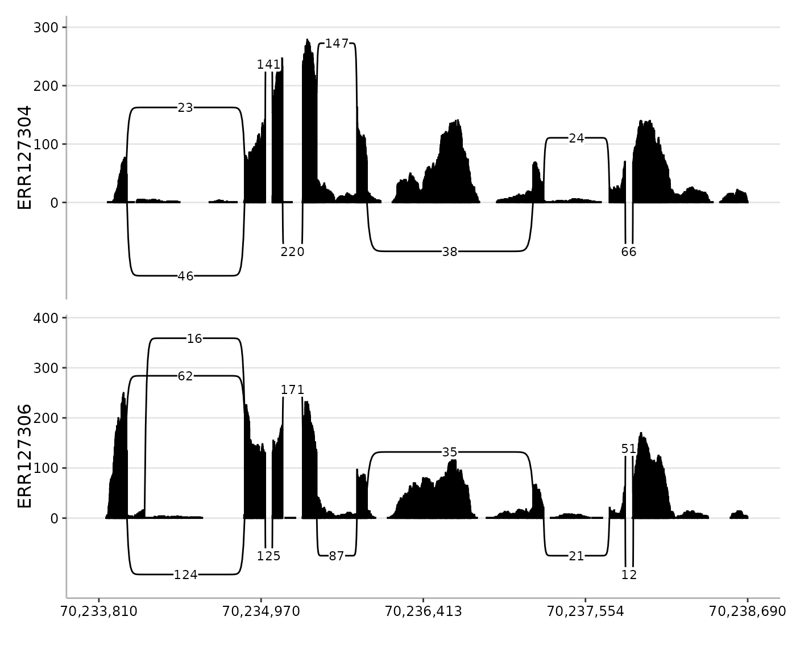
Introduction
Sashimi plots visualise RNA-seq alignments across a genomic interval. They combine per-base read coverage with arcs representing reads that span splice junctions. This makes them useful for inspecting transcript structure, exon usage, alternative splice sites, intron retention, and differences in junction usage between samples.
Motivation
Several excellent tools already exist for generating sashimi-style
visualisations, including genome browsers, command-line tools, and
workflow-specific plotting utilities. spliceTerrain is
intended to complement these approaches by providing an R-native
interface that works naturally within the Bioconductor ecosystem and
reproducible analysis documents.
In many RNA-seq analyses, regions of interest, annotations, and
genomic features are already represented as GRanges or
GRangesList objects. spliceTerrain accepts
these objects directly, making it straightforward to move from a
differential splicing result or genomic annotation to a sashimi plot
inside the same R session. For users who want more control, processed
coverage and junction data can also be returned, inspected, modified,
and replotted.
Complete guide
The following sections build up aspects of a more complete plot and
introduce the main options available in spliceTerrain().
The examples continue to use the HNRNPC chr14 BAM files from the quick
start.
Input BAM files and regions
The bam argument is a character vector of indexed BAM
file paths. If the vector is named, those names are used as sample
labels in the plot. If it is unnamed, labels are derived from the BAM
file names.
bams <- RNAseqData.HNRNPC.bam.chr14_BAMFILES[c(7, 1)]
names(bams) <- c("HNRNPC knockdown", "Control")The region argument can be a character string, a
GRanges, or a GRangesList. Character regions
may use comma-separated coordinates, such as
"chr14:70,233,810-70,238,690". For Bioconductor workflows,
using a GRanges object is often more convenient.
Because the example BAM files use UCSC style chromosome names, we also convert the region to UCSC style before plotting.
ensDb <- EnsDb.Hsapiens.v75
region <- transcripts(ensDb, filter = TxIdFilter("ENST00000394366"))
seqlevelsStyle(region) <- "UCSC"
region
#> GRanges object with 1 range and 6 metadata columns:
#> seqnames ranges strand | tx_id tx_biotype tx_cds_seq_start tx_cds_seq_end gene_id tx_name
#> <Rle> <IRanges> <Rle> | <character> <character> <integer> <integer> <character> <character>
#> ENST00000394366 chr14 70233810-70238690 + | ENST00000394366 protein_coding 70234874 70238178 ENSG00000100650 ENST00000394366
#> -------
#> seqinfo: 1 sequence from hg19 genomeIf multiple ranges are supplied, spliceTerrain() reduces
them to a single span on one chromosome and uses that span as the BAM
query and plotting window.
Adding transcript annotation
Transcript models can be displayed with the annotation
argument. This must be a GRangesList, where each list
element represents one transcript or feature group. The names of the
list elements are used as y-axis labels in the annotation panel. When
annotation is present, the final plot contains one panel per BAM file
plus one annotation panel. The relative heights of these panels are
controlled with panel_heights, where the final value
corresponds to the annotation panel.
For this vignette, the plotting region covers the SRSF5 gene. We retrieve exon ranges for the gene and keep a small number of transcripts so the annotation panel remains readable.
annotation <- exonsBy(
ensDb, by = "tx", filter = GeneIdFilter("ENSG00000100650")
)
annotation <- annotation[1:3]
seqlevelsStyle(annotation) <- "UCSC"
spliceTerrain(
bam = bams,
region = region,
annotation = annotation,
panel_heights = c(2, 2, 1)
)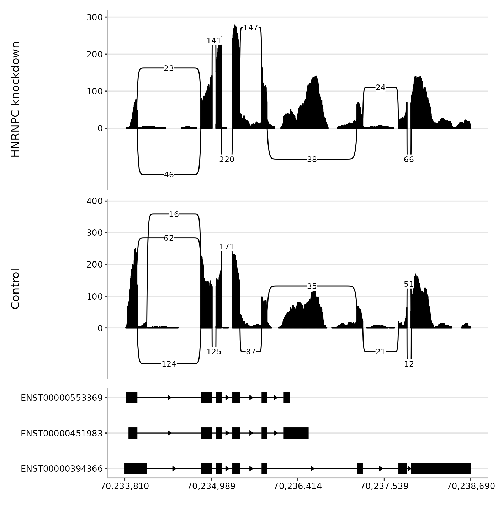
Styling annotation tracks
Annotation features can be coloured by a metadata column with
anno_fill_by. Use "group" to colour each
transcript or feature group separately. Specific fill colours can be
supplied with anno_fill_colours.
Text labels can be drawn inside annotation features with
anno_label_by. The label colour and size are controlled by
anno_label_colour and anno_label_size. The
min_arrow argument controls how wide an annotation intron
must be before directional arrows are drawn.
spliceTerrain(
bam = bams,
region = region,
annotation = annotation,
panel_heights = c(2, 2, 1),
anno_fill_by = "group",
anno_fill_colours = c(
ENST00000553369 = "#66C2A5",
ENST00000394366 = "#8DA0CB",
ENST00000451983 = "#FC8D62"
),
anno_label_by = "exon_rank",
anno_label_colour = "black",
anno_label_size = 2.5,
min_arrow = 100
)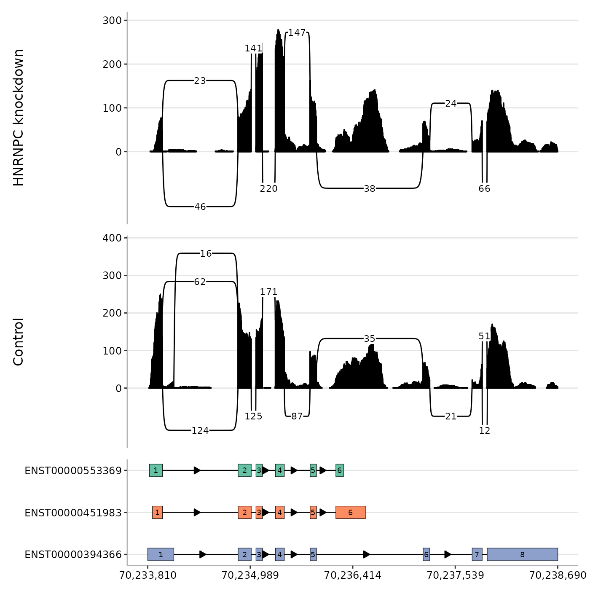
Highlighting regions of interest
The highlight argument marks one or more genomic
intervals with shaded vertical bands. This is useful for drawing
attention to a splice site, variant position, alternative exon, or other
feature of interest. The highlighted interval can be supplied as a
character string or as a GRanges object.
spliceTerrain(
bam = bams,
region = region,
highlight = "chr14:70234854-70234854",
highlight_colour = "red"
)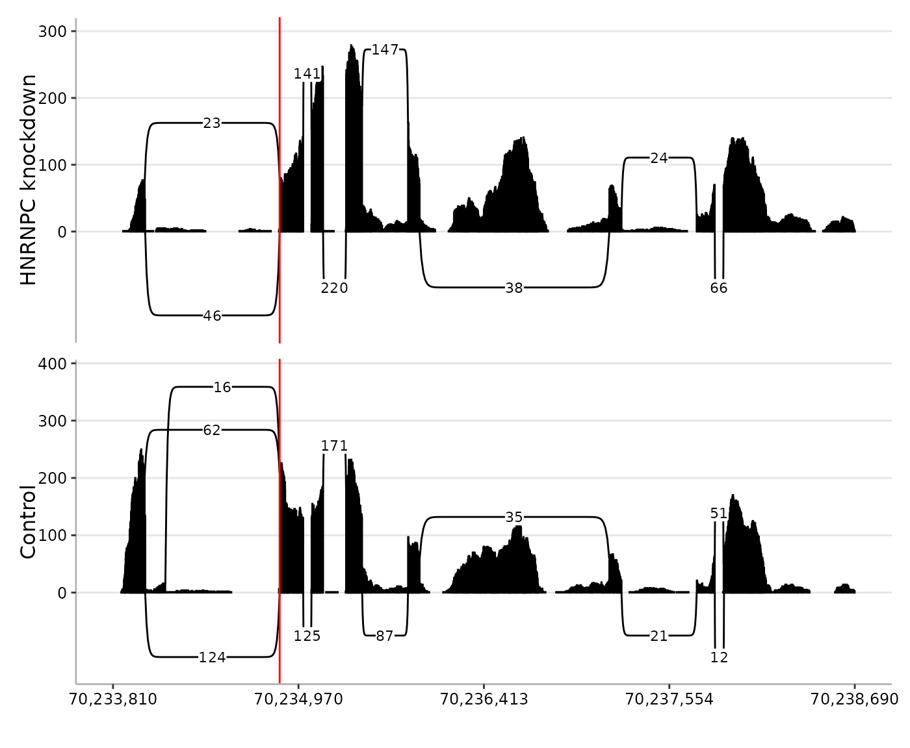
A wider interval can be highlighted with a semi-transparent colour.
spliceTerrain(
bam = bams,
region = region,
highlight = "chr14:70234056-70234097",
highlight_colour = scales::alpha("red", 0.2)
)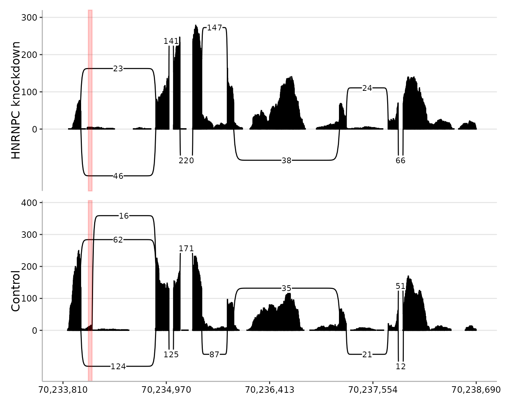
Percent spliced in labels
Percent spliced in (PSI) is commonly used to summarise how often a
splice choice is used relative to other local splice choices. In
spliceTerrain(), the psi argument identifies a
local genomic interval and labels junctions whose start or end anchor
overlaps that interval. The label reports each selected junction’s
fraction of the included junction reads.
This is intended as an interpretable local junction-usage label on the sashimi plot, rather than full transcript-level isoform inference.
spliceTerrain(
bam = bams,
region = region,
psi = "chr14:70234854-70234854"
)Filtering signal
Three arguments control how much signal is imported and displayed.
min_mapq filters alignments by mapping quality during BAM
import. min_coverage filters per-base coverage positions
before plotting. min_junction_reads filters splice junction
arcs by their supporting read count.
spliceTerrain(
bam = bams,
region = region,
min_mapq = 10,
min_coverage = 10,
min_junction_reads = 20
)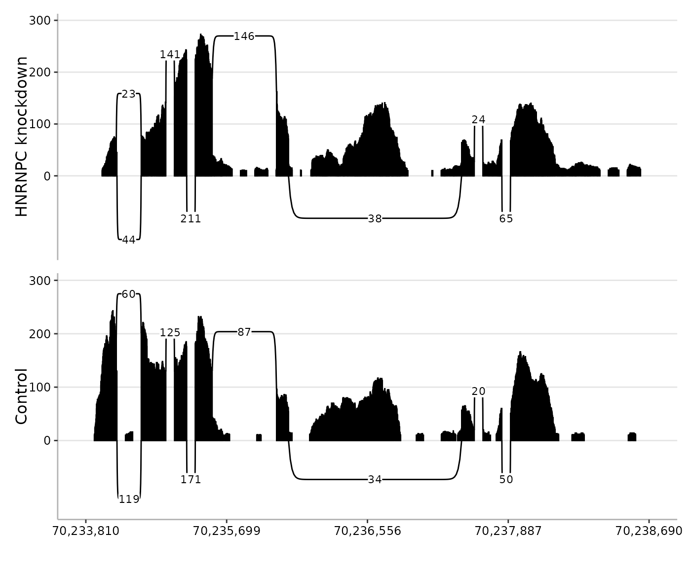
Technical note: min_coverage and
min_junction_reads are applied to raw counts before any
library-size normalisation is applied.
Stranded RNA-seq data
The strandedness argument describes how read strand
should be interpreted. It can be one of "unstranded",
"forward", or "reverse", and can be supplied
either as a single value for all BAM files or one value per BAM file.
The example BAM files are unstranded, so both read orientations contain
signal from the transcript.
spliceTerrain(
bam = bams,
region = region,
strandedness = "unstranded"
)Specifying a stranded protocol for unstranded BAM files filters reads
by strand. As a result, either "reverse" or
"forward" shows only part of the coverage that is visible
when strandedness = "unstranded".
spliceTerrain(
bam = bams,
region = region,
strandedness = "forward"
)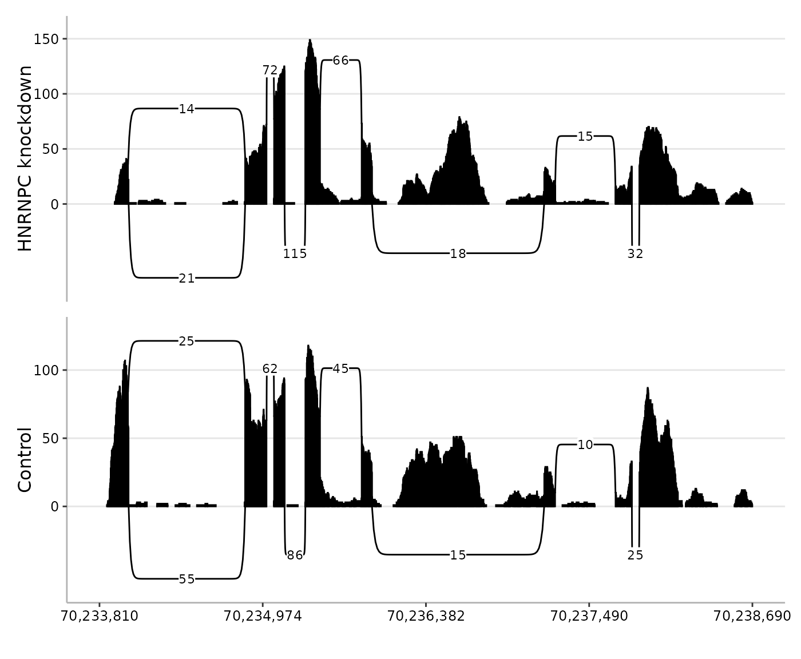
spliceTerrain(
bam = bams,
region = region,
strandedness = "reverse"
)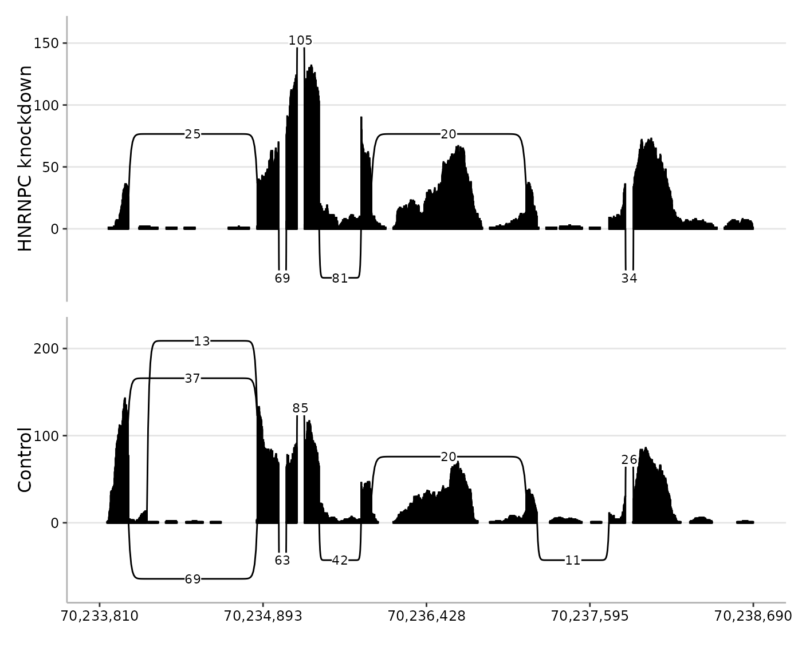
For paired-end BAM files, spliceTerrain() detects
paired-end status from the BAM alignment flags and imports alignments
accordingly. If region specifies a strand and
strandedness is not "unstranded", alignments
are restricted to the resolved region strand.
Normalising between samples
When samples have different sequencing depths, coverage and junction
counts can be normalised with lib_size. Additional
normalisation factors, such as edgeR TMM factors, can be
supplied with norm_factors. The effective library size is
calculated as lib_size * norm_factors.
By default, counts are normalised to the median effective library
size. Use normalise_to to set the target explicitly. The
common_y argument is useful when comparing samples because
it puts sample panels on the same y-axis scale.
spliceTerrain(
bam = bams,
region = region,
lib_size = c(40e6, 55e6),
norm_factors = c(0.95, 1.08),
normalise_to = 50e6,
common_y = TRUE
)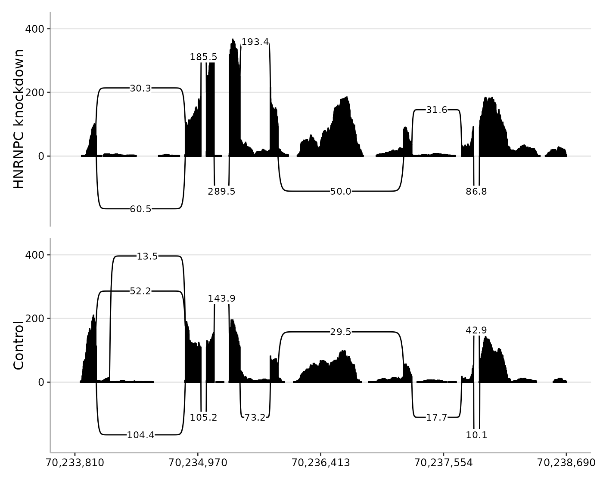
Compressed genomic layouts
By default, compress_introns = TRUE compacts large
uninformative gaps so the plot focuses on observed signal. The
intron_width argument controls the approximate width of
compacted introns in plot space.
spliceTerrain(
bam = bams,
region = region,
compress_introns = TRUE,
intron_width = 500
)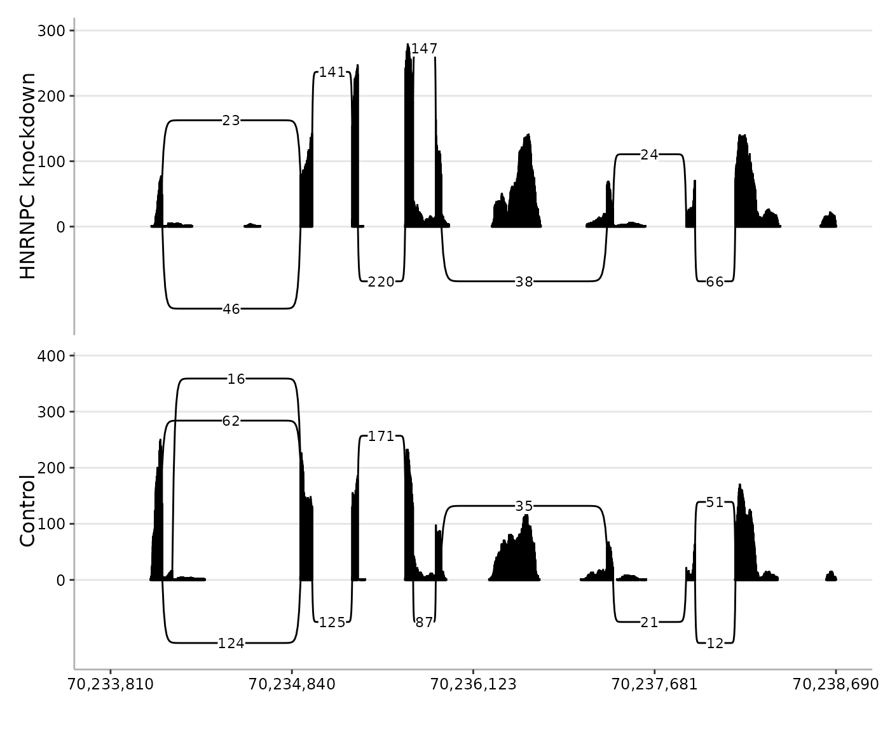
If exact genomic distances are more important than compact display, intron compression can be disabled.
spliceTerrain(
bam = bams,
region = region,
compress_introns = FALSE
)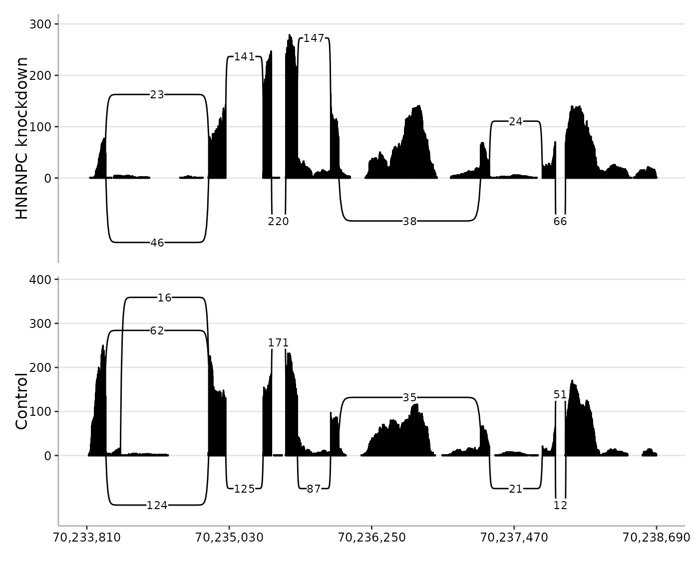
Junction arc display
Junction arcs can be tuned with arc_height,
arc_side, and arc_scale. Increasing
arc_height gives stacked arcs more vertical separation. The
arc_side argument controls whether arcs are drawn above,
below, or on both sides of the coverage track. When
arc_scale = TRUE, arc line width is scaled by junction read
count after filtering. Junction label size is controlled with
junc_text_size.
spliceTerrain(
bam = bams,
region = region,
psi = "chr14:70234854-70234854",
arc_height = 2,
arc_side = "above",
arc_scale = TRUE,
junc_text_size = 2.5
)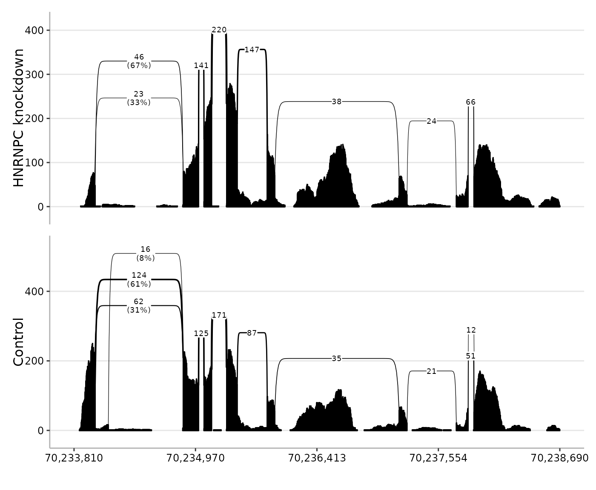
Sample colours and panel layout
The colours argument controls the colours used for
sample coverage and junction arcs. It can be a single colour used for
all samples or one colour per BAM file.
Axis text sizes can be adjusted with axis_title_size and
axis_text_size.
spliceTerrain(
bam = bams,
region = region,
annotation = annotation,
colours = c("darkblue", "darkred"),
panel_heights = c(2, 2, 1),
axis_title_size = 20,
axis_text_size = 12
)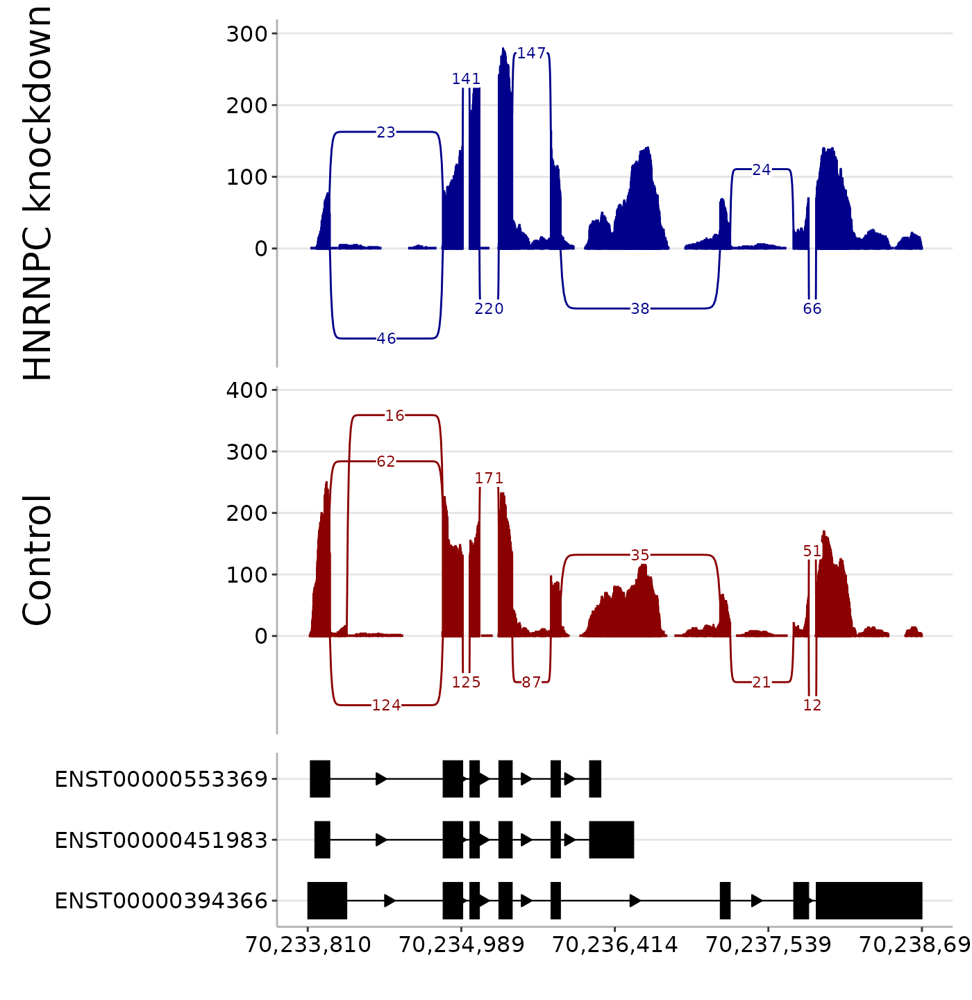
Returning and reusing plot data
Most users can work directly with the final plot returned by
spliceTerrain(). For advanced workflows, set
return_ctx = TRUE to return the processed context instead.
This contains the validated inputs, imported alignments, summarised
coverage, junction counts, mapped plot-space data, and plot
settings.
ctx <- spliceTerrain(
bam = bams,
region = region,
return_ctx = TRUE
)
names(ctx)
#> [1] "input" "plot"
names(ctx$plot)
#> [1] "cov" "juncs" "map" "annotation" "region" "psi" "highlight" "plist"The context can be passed back with the ctx argument to
redraw the plot without re-importing BAM files or recalculating coverage
and junctions.
spliceTerrain(ctx = ctx)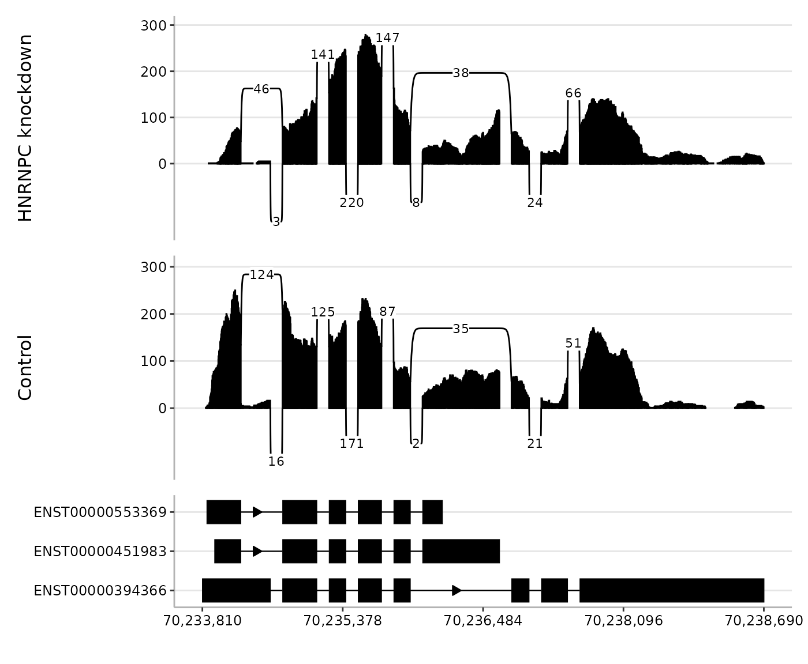
Session information
sessionInfo() |>
pander()R Under development (unstable) (2026-05-28 r90087)
Platform: x86_64-pc-linux-gnu
locale: LC_CTYPE=C.UTF-8, LC_NUMERIC=C, LC_TIME=C.UTF-8, LC_COLLATE=C.UTF-8, LC_MONETARY=C.UTF-8, LC_MESSAGES=C.UTF-8, LC_PAPER=C.UTF-8, LC_NAME=C, LC_ADDRESS=C, LC_TELEPHONE=C, LC_MEASUREMENT=C.UTF-8 and LC_IDENTIFICATION=C
attached base packages: stats4, stats, graphics, grDevices, utils, datasets, methods and base
other attached packages: GenomeInfoDb(v.1.49.1), pander(v.0.6.6), scales(v.1.4.0), EnsDb.Hsapiens.v75(v.2.99.0), ensembldb(v.2.37.1), AnnotationFilter(v.1.37.0), GenomicFeatures(v.1.65.0), AnnotationDbi(v.1.75.0), Biobase(v.2.73.1), GenomicRanges(v.1.65.0), Seqinfo(v.1.3.0), IRanges(v.2.47.1), S4Vectors(v.0.51.2), BiocGenerics(v.0.59.3), generics(v.0.1.4), RNAseqData.HNRNPC.bam.chr14(v.0.51.0), spliceTerrain(v.0.99.0) and BiocStyle(v.2.41.0)
loaded via a namespace (and not attached): tidyselect(v.1.2.1), dplyr(v.1.2.1), farver(v.2.1.2), blob(v.1.3.0), Biostrings(v.2.81.2), S7(v.0.2.2), bitops(v.1.0-9), lazyeval(v.0.2.3), fastmap(v.1.2.0), RCurl(v.1.98-1.18), GenomicAlignments(v.1.49.0), XML(v.3.99-0.23), digest(v.0.6.39), lifecycle(v.1.0.5), ProtGenerics(v.1.45.0), KEGGREST(v.1.53.0), RSQLite(v.3.53.1), magrittr(v.2.0.5), compiler(v.4.7.0), rlang(v.1.2.0), sass(v.0.4.10), tools(v.4.7.0), yaml(v.2.3.12), rtracklayer(v.1.73.0), knitr(v.1.51), labeling(v.0.4.3), S4Arrays(v.1.13.0), htmlwidgets(v.1.6.4), bit(v.4.6.0), curl(v.7.1.0), DelayedArray(v.0.39.2), RColorBrewer(v.1.1-3), abind(v.1.4-8), BiocParallel(v.1.47.0), withr(v.3.0.2), desc(v.1.4.3), grid(v.4.7.0), ggplot2(v.4.0.3), SummarizedExperiment(v.1.43.0), cli(v.3.6.6), rmarkdown(v.2.31), crayon(v.1.5.3), ragg(v.1.5.2), otel(v.0.2.0), httr(v.1.4.8), rjson(v.0.2.23), BiocBaseUtils(v.1.15.1), DBI(v.1.3.0), cachem(v.1.1.0), parallel(v.4.7.0), BiocManager(v.1.30.27), XVector(v.0.53.0), restfulr(v.0.0.16), matrixStats(v.1.5.0), vctrs(v.0.7.3), Matrix(v.1.7-5), jsonlite(v.2.0.0), bookdown(v.0.46), patchwork(v.1.3.2), bit64(v.4.8.2), systemfonts(v.1.3.2), jquerylib(v.0.1.4), glue(v.1.8.1), pkgdown(v.2.2.0), codetools(v.0.2-20), gtable(v.0.3.6), UCSC.utils(v.1.9.0), BiocIO(v.1.23.3), tibble(v.3.3.1), pillar(v.1.11.1), htmltools(v.0.5.9), R6(v.2.6.1), textshaping(v.1.0.5), evaluate(v.1.0.5), lattice(v.0.22-9), cigarillo(v.1.3.0), png(v.0.1-9), Rsamtools(v.2.29.0), memoise(v.2.0.1), bslib(v.0.11.0), Rcpp(v.1.1.1-1.1), SparseArray(v.1.13.2), xfun(v.0.57), fs(v.2.1.0), MatrixGenerics(v.1.25.0) and pkgconfig(v.2.0.3)